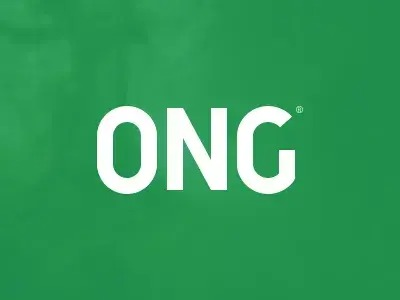

Transformando vidas através da solidariedade 💙
O Círculo da Esperança é uma ONG dedicada a promover ações sociais que impactam positivamente comunidades em situação de vulnerabilidade. Atuamos com projetos de voluntariado, campanhas de doação e apoio a famílias em risco.

Quem somos
Desde 2025, o Círculo da Esperança reúne pessoas dispostas a fazer a diferença. Nosso propósito é fortalecer vínculos humanos e promover a empatia através da ação.
Entre em contato
Email: contato@circulodaesperanca.org
Telefone: (11) 99999-9999
Endereço: Rua da Esperança, 100 - São Paulo/SP